-
最新版
- バージョン
- 0.9.0-beta.1 (2026-10-15)
- ダウンロード
- Discord サーバーでお知らせします
簡単スライム化キット
β テスター資料
アバターに prefab を 1 つ置いて設定するだけで、メニューから「スライム化」できるキットです。この資料では、参加の要項と、設定画面の見方を画面のスクショで説明します。
このツールはベータ版です。
Claude (AI) を利用して開発しているため、AI に抵抗がある方には申し訳ありませんが、辞退をお願いします。
このキットについて
β の目的は、いろいろなアバターで設定だけで正しく動くかを確かめることです。
- スライム化すると、胸のコアから半透明のゼリーの体に変わり、垂れ・水たまり・コアが出ます
- メニューで色・光る・垂れ・水たまりを切り替えられます。「スライムの時は溶けて消える」にした服は、スライムになって溶け落ちます
- 元のアバターは書き換えません。アップロードの時にだけスライム化の処理が入ります (非破壊)
- PC 専用 (自作シェーダーのため Quest 非対応)
要項
下の条件と「分かっている制限」を確かめてから参加してください。
| 項目 | 条件 |
|---|---|
| 年齢 | 18 歳以上 (キットに R-18 の要素が含まれます) |
| 環境 | PC で VRChat を遊んでいる (デスクトップでも VR でも可) |
| Unity | VCC (または ALCOM) で作ったアバター用プロジェクト (Unity 2022.3) |
| 導入済みのもの | Modular Avatar (NDMF) と lilToon。アバターの衣装を MA で着せたことがある |
| アバター | BOOTH 等で販売されている人型のアバター。改変してよいか、各アバターの利用規約を先に確かめてください |
| 報告 | 「確認してほしいこと」の結果を 1 回以上送れる |
申請は要りません。サーバーに参加した時点でテストへの参加として受け付けます。
子宮のコアは、発売時には別売りの R-18 アドオンに分かれます。テスト版には本体と一緒に入っています。
こちらの要項に同意できる方のみ、Discord サーバーに参加してください。
招待リンク: 【あとで記入】
既存のプロジェクトに影響を与えないように注意は払っておりますが、テスト用のプロジェクトを作成し、そちらで作業してください。
こちらのツールのテストの際の PC・Unity などのトラブルについて、一切の責任を負いかねます。
導入の手順
テスト用のプロジェクトを作る
普段使っているプロジェクトには入れないでください。アバター用プロジェクトを丸ごと複製しても構いません。
複製したプロジェクトに unitypackage をインポートする
Assets/LeachiToyBox/EasySlimeができます。テスト用にアバターを複製し、blueprint ID を外す
普段使いのアバターとは別の ID で、新しくアップロードします。
EasySlime.prefabをアバターのルートの子に置くシーンのアバターの見た目は変わりません。設定用の部品 (Easy Slime Avatar) が置かれるだけです。
prefab のインスペクターで設定する
「準備」を上から ✔ にして、必要なら「好み」を選びます。画面の見方は 2 章から。
SDK からプライベートでアップロードする
スライム化の処理はアップロードの時に、ビルド用の複製にだけかかります。
ゲーム内で Expression メニューの「スライム」を開いて試す
やめる時は prefab を消すだけです。
設定画面の全体
prefab を選ぶと、インスペクターに Easy Slime Avatar が出ます。上から 準備・好み・細かく調整 の 3 段です。ふつうは準備と好みだけで足ります。
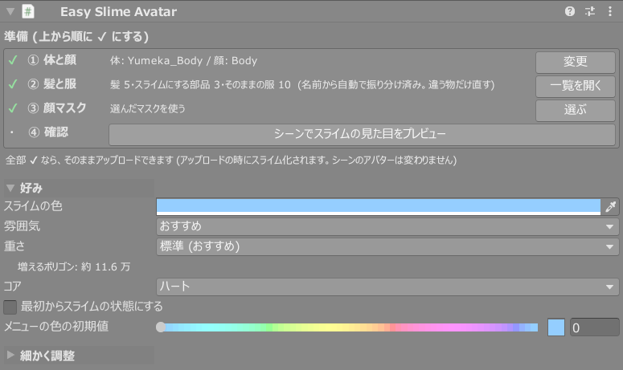
上から順に ✔ にするチェックリスト。✔ は緑、要確認は黄色の「!」、足りない時は赤の「✖」。全部 ✔ ならそのままアップロードできます。
色・雰囲気・重さ・コア・メニューの初期値。見た目の方向をまとめて決めます。既定のままでも動きます。
好みで決めた中身を 1 項目ずつ変える所。項目にマウスを乗せると説明が出ます。
準備 ①〜④
各行の右のボタンを押すと、その下に中身が開きます。もう一度押す (「閉じる」) と閉じます。
① 体と顔
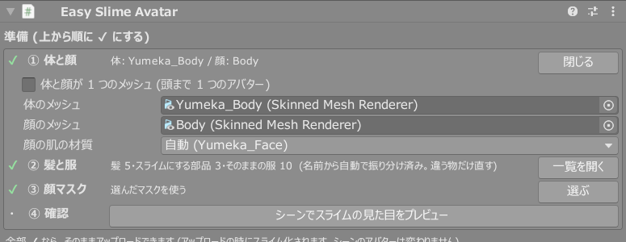
| 項目 | 説明 |
|---|---|
| 体のメッシュ / 顔のメッシュ | 自動で入ります。違っていたら選び直してください |
| 顔の肌の材質 | 顔のメッシュの材質のうち、顔の肌が塗られているもの。顔マスクはこの材質で作り、ほかの材質 (赤面・涙などの重ね) は元の絵のまま残します。顔がスライムにならない時はここを確かめてください |
| 体と顔が 1 つのメッシュ | 体と顔が分かれていないアバター用。オンにすると「顔の材質」を選ぶ欄が出て、その材質だけを顔、ほかを体として扱います |
② 髪と服
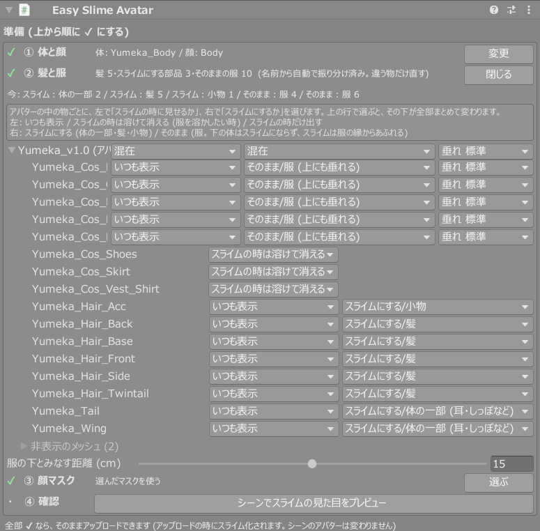
名前から髪を自動で振り分けてあります。違う物だけ直してください。一番上の行 (アバター名) で選ぶと、下が全部まとめて変わります。
| 欄 | 選べるもの | 使いどころ |
|---|---|---|
| 左: 表示 | いつも表示 / スライムの時は溶けて消える / スライムの時だけ出す | スライム化で脱がしたい服は「溶けて消える」。溶け落ちる演出が付きます |
| 右: 扱い | スライムにする/髪・体の一部 (耳・しっぽなど)・小物 そのまま/服・服 (上にも垂れる) | 「そのまま/服」の下の体はスライムにならず、スライムは服の縁からあふれます。「上にも垂れる」なら服の上にも液が垂れます |
| 垂れの長さ | 短め / 標準 / 長め / とても長い | 「服 (上にも垂れる)」の行だけ。服の上を垂れる長さ |
| 服の下とみなす距離 (cm) | 既定 15 | 服の下からスライムが漏れるなら上げる。袖口の近くの肌までスライムにならないなら下げる |
普段は非表示の物は「非表示のメッシュ」にまとめてあります。開くと同じように選べます。
③ 顔マスク
顔のどこを元の絵のまま残すかを選びます。くわしくは 4 章。
④ 確認
「シーンでスライムの見た目をプレビュー」を押すと、シーンビューでスライムの見た目になります。もう一度押すと元に戻ります。プレビューには垂れ・水たまり・服の上の垂れは出ません (アップロード・Play では入ります)。
顔マスクの選び方
顔マスクは、目・まつげ・眉・口など元の絵のまま残す部品を決めるものです。どのアバターも最初に自分で選びます。選ぶまでは、顔は元の絵のまま (スライムになりません)。
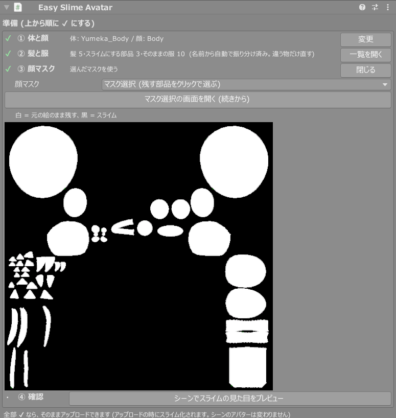

「マスク選択の画面を開く」を押す
初めて開いた時は「おまかせ」(推測) で選ばれた状態から始まります。
部品をクリックして直す
クリックで赤くなり、もう一度で戻ります。赤 = 元の絵のまま残る、赤くない所 = スライムになる、暗い所は顔に使われていない所です。マウスを乗せた部品は黄色く光ります。
- 島になっていないチーク・線は、上の「塗りつぶし」に切り替えて塗ります
- 間違えたら「1 つ前に戻す (Ctrl+Z)」、やり直すなら「おまかせで選ぶ」
「保存してこのマスクを使う」
Generated/<アバター名>/FacePickMask.pngに保存されます。次に開くと続きから直せます。
自分で作った白黒の画像を使う場合は、③ の「顔マスク」の欄で「自分で作ったマスク画像を使う」を選びます。
- マスク選択の画面の、開いた直後 (おまかせのまま) のスクショ
- 直して保存した後のスクショ、または
FacePickMask.png - ゲーム内でスライムにした時の顔のスクショ (正面と斜め)
おまかせの外れ方を集めて、推測を直すのに使います。顔のテクスチャそのものは送らなくて大丈夫です。
好み
見た目の方向をまとめて決める所です (2 章のスクショの真ん中)。
| 項目 | 既定 | 説明 |
|---|---|---|
| スライムの色 | 水色 | スライムになった時の色。ゲーム内メニューの「色」でその場で変えることもできます |
| 雰囲気 | おすすめ | 崩れ方・垂れの量・泡などをまとめて決めます。おすすめ / 控えめ (形を保ち、垂れは少なめ) / ドロドロ (よく崩れ、垂れが多い) / 手動。細かく調整で体・垂れ・泡を変えると「手動」になります |
| 重さ | 標準 | 垂れの本数と細かさ。下に「増えるポリゴン」の目安が出ます。目安 (溶ける服 2 着・コアはハート): 軽い 約 6.5 万 / 標準 約 9.4 万 / 豪華・軽量版 約 17.6 万 / 豪華 約 32.8 万。溶ける服が多いほど増えます |
| コア | ハート | 体の中に浮かぶ芯。なし / ハート / 球 / 水晶 / 子宮 (下腹部) |
| 最初からスライムの状態にする | オフ | アバターを着た時からスライム。メニューで肌に戻せます |
| メニューの色の初期値 | 0 | ゲーム内メニューの「色」の最初の位置。0 = 上のスライムの色のまま。帯の色がその位置で着た時の色、右の四角が今の値の色です |
細かく調整
8 つのまとまりに分かれています。どれも既定のままで動きます。気になる所だけ変えてください。
体
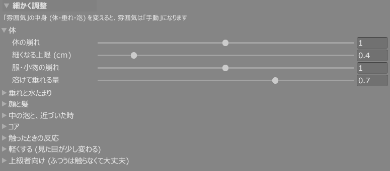
| 項目 | 既定 | 説明 |
|---|---|---|
| 体の崩れ | 1 | 体がどれだけ形を崩して、だれたり膨らんだりするか。0 = 形そのまま / 1 = 標準 / 2 = もっと崩れる |
| 細くなる上限 (cm) | 0.4 | 崩れで体が元より細くなる量の上限。腕・指が棒のように細くなる時は小さく |
| 服・小物の崩れ | 1 | ② でスライムにした服・小物の崩れ方。小物はさらに控えめ |
| 溶けて垂れる量 | 0.7 | 体の表面がどれだけ溶けて下へ垂れるか。0 = 垂れない / 1 = たくさん |
垂れと水たまり
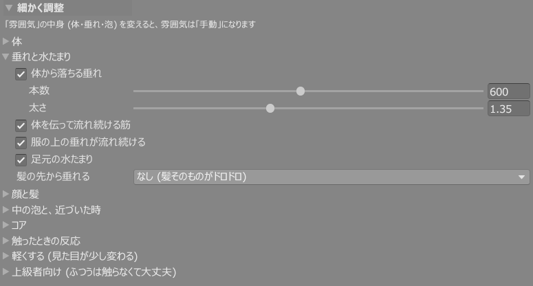
| 項目 | 既定 | 説明 |
|---|---|---|
| 体から落ちる垂れ | オン | 体の下向きの所から液が垂れて床まで落ちる。オフにすると作らない (ゲーム内メニューの「垂れ」は作った垂れを出し入れする)。本数 (既定 600、多いほどポリゴンも増える) と太さ (1.35 が標準) |
| 体を伝って流れ続ける筋 | オン | 体の表面を、液の筋がゆっくり流れ落ち続ける |
| 服の上の垂れが流れ続ける | オン | 「服 (上にも垂れる)」の服の上の垂れ。オン = 流れ落ち続ける / オフ = 伸びたら止まる |
| 足元の水たまり | オン | スライムになると足元に水たまりが広がる。ゲーム内メニューでもオンオフできます |
| 髪の先から垂れる | なし | なし = 髪そのものが溶けたように見える / あり = 毛先が膨らんで、ちぎれた雫が床へ落ちる |
顔と髪
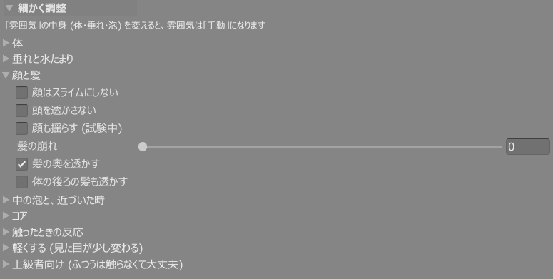
| 項目 | 既定 | 説明 |
|---|---|---|
| 顔はスライムにしない | オフ | オン = 顔は元の絵のまま (首から下だけスライム)。顔マスクも要らなくなります |
| 頭を透かさない | オフ | オン = 頭の向こうが透けず、首から顎へ少しずつ透けなくなる。頭の中の物が見える時に |
| 顔も揺らす (試験中) | オフ | 顔も体と一緒にぷるぷる揺れる。唇が動いて歯が見えることがあります |
| 髪の崩れ | 0 | 0 = 髪の形はそのままで質感だけスライム。上げると髪も垂れて崩れます (前髪の長いアバターは目が隠れることがあります) |
| 髪の奥を透かす | オン | 髪がガラスのように透けて、奥の頭や体が見える。オフ = 髪は一様な色 |
| 体の後ろの髪も透かす | オフ | オン = 前から見て、体の後ろの髪が体越しに透ける (胴の色が濃くなりやすい) |
中の泡と、近づいた時
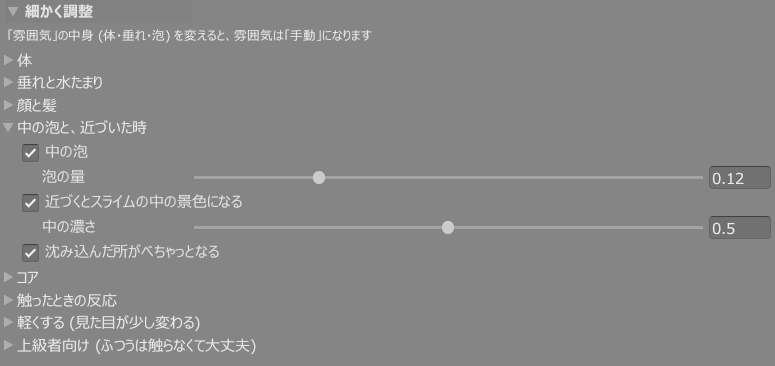
| 項目 | 既定 | 説明 |
|---|---|---|
| 中の泡 / 泡の量 | オン / 0.12 | スライムの中に小さな泡が浮かんで、ゆっくり昇る。0 = なし、上げるほど泡だらけ |
| 近づくとスライムの中の景色になる | オン | 見ている人のカメラが体に近づくと濃くなり、体の中に入ると視界がスライムで埋まる (泡・揺らめき・歪んだ外) |
| 中の濃さ | 0.5 | 0 = 外がよく見える / 0.5 = 標準 / 1 = ほとんど外が見えず、締め付けて脈打つ |
| 沈み込んだ所がべちゃっとなる | オン | ほかの人の体や床がスライムに沈んだ境目に、濃い液の縁とつやを出す。影の出るワールドだけで見えます |
コア
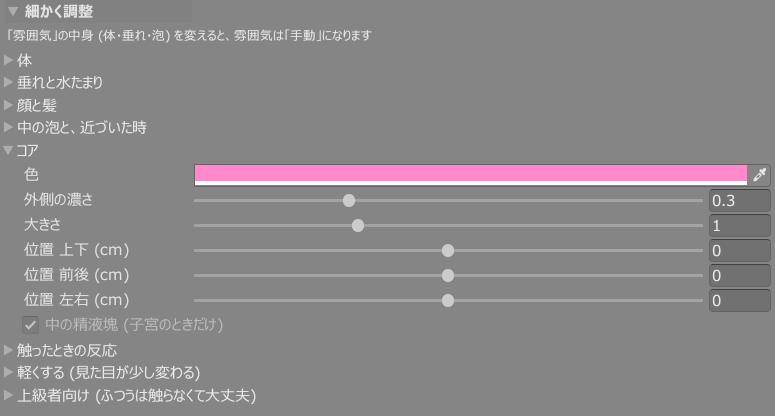
| 項目 | 既定 | 説明 |
|---|---|---|
| 色 | ピンク | コアの色 |
| 外側の濃さ | 0.3 | コアのまわりの薄い膜の濃さ。0 = 芯だけ / 1 = 外側まで濃い |
| 大きさ | 1 | 1 = 標準 |
| 位置 上下 / 前後 / 左右 (cm) | 0 | 自動で置いた位置からのずれ。+ で上 / 前 (お腹側) / アバターの左 |
| 中の精液塊 | オン | コアが「子宮」の時だけ、中に白い塊が浮かぶ |
好みのコアが「なし」の時は使いません。
触ったときの反応
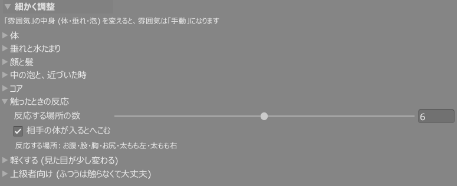
| 項目 | 既定 | 説明 |
|---|---|---|
| 反応する場所の数 | 6 | 手・指・足・頭が触れると、へこんで盛り上がり波紋が広がる場所の数 (お腹・股・胸・お尻・太もも左右)。多いほど VRChat の Contacts を使います |
| 相手の体が入るとへこむ | オン | お腹・胸・お尻に相手の体が入ると、その分へこむ (Contacts +3) |
軽くする (見た目が少し変わる)
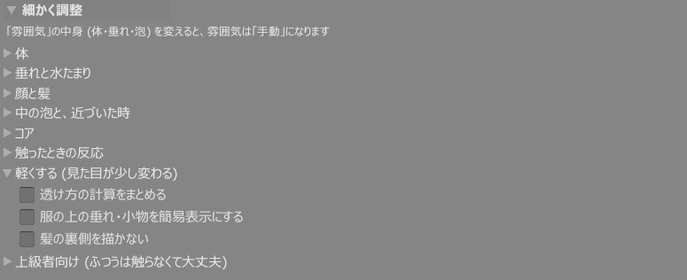
| 項目 | 既定 | 説明 |
|---|---|---|
| 透け方の計算をまとめる | オフ | 髪・垂れ・水たまりの透け方を 1 回の計算にまとめて軽くする。体は透けるが、奥の髪や垂れどうしは透けなくなる |
| 服の上の垂れ・小物を簡易表示にする | オフ | 厚みを測らずに描く回数を減らす。少し平たく見える |
| 髪の裏側を描かない | オフ | 髪の裏面を描かずに軽くする。板の髪を裏から見ると消える |
上級者向け (ふつうは触らなくて大丈夫)
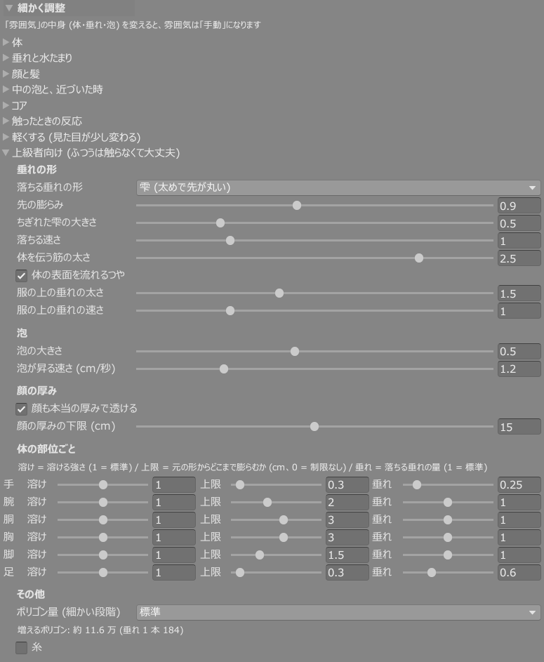
- 垂れの形: 落ちる垂れの形 (細い筋 / 雫)、先の膨らみ、ちぎれた雫の大きさ、落ちる速さ、体を伝う筋の太さ、体の表面を流れるつや、服の上の垂れの太さ・速さ
- 泡: 泡の大きさ (0.5 が標準)、泡が昇る速さ (cm/秒)
- 顔の厚み: 顔も本当の厚みで透ける (目のまわりに枠のような濃い線が出る時はオフ)、顔の厚みの下限
- 体の部位ごと: 手・腕・胴・胸・脚・足ごとに、溶け (溶ける強さ)・上限 (元の形からどこまで膨らむか cm)・垂れ (落ちる垂れの量)
- その他: ポリゴン量を「重さ」より細かく選ぶ、糸 (腕と胴など近い所どうしを液の糸で結ぶ)
困ったときの設定
| こうなったら | ここを変える |
|---|---|
| 服の下からスライムが漏れる | ② の「服の下とみなす距離」を上げる |
| 顔がスライムにならない | ③ の顔マスクを選んで保存したか確かめる。① の「顔の肌の材質」が合っているか |
| 目・口までスライムになる | マスク選択の画面で、その部品をクリックして赤にする |
| 前髪が目にかかる | 顔と髪の「髪の崩れ」を下げる (0 なら髪の形はそのまま) |
| 胴だけ色が濃く見える | 顔と髪の「体の後ろの髪も透かす」をオフ |
| 腕・指が棒のように細くなる | 体の「細くなる上限」を小さくする |
| 中に入った時に見えすぎる / 見えなさすぎる | 中の泡と近づいた時の「中の濃さ」 |
| 頭の中の物 (首の上端・表情の板など) が見える | 顔と髪の「頭を透かさない」をオン |
| 目のまわりに枠のような濃い線が出る | 上級者向けの「顔も本当の厚みで透ける」をオフ、または「顔の厚みの下限」を上げる |
| 重い | 好みの「重さ」を「軽い」に。さらに「軽くする」の 3 つ |
| 形がドロドロすぎる / 物足りない | 好みの「雰囲気」を控えめ・ドロドロに |
ゲーム内
| メニュー「スライム」 | 種類 | 内容 |
|---|---|---|
| スライム化 | トグル | 人間 ⇄ スライム |
| 色 | ラジアル | 色相を変える。最初の位置は「メニューの色の初期値」 |
| 光る | ラジアル | 内側から光る。暗いワールド向け |
| 垂れ | トグル | 体・髪から落ちる垂れと、服の上の垂れ (既定オン)。体の表面を流れる筋は残ります |
| 水たまり | トグル | 立ち止まると床に水たまりが広がる (既定オン) |
- 手・指・足・頭が触れるとへこんで波紋が出ます。相手の体が入るともっと深くへこみます
- 視点がめり込むとスライムの中の景色になります
- オフにすると 2 秒ほどで元の見た目に戻ります
- 増えるもの: 同期パラメータ 19 bit、Contacts 9 個 (既定の設定で)
確認してほしいこと
一番知りたいのは「設定だけで最後まで通るか」と「ゲーム内で崩れて見える所がないか」です。全部でなくて構いません。試せた所だけ報告してください。
- prefab を入れて、エラーなくアップロードできた (コンソールに赤いエラーが出たらその内容も)
- ① 体・顔のメッシュが自動で正しく入った
- ② 髪・服の振り分けのおすすめが合っていた
- ③ 顔マスクの「おまかせ」が合っていた / どこを直したか
- ④ プレビューで見た目を確かめられた
- アップロード後も、元のアバターと同じ見た目だった (他の人から見ても)
- 胸のあたりから広がって、全身がスライムになった
- 顔: 目・眉・口が残り、肌がスライムになった。顔の中の部品が透けていない
- 表情 (赤面・涙など) を出しても崩れない
- 髪・服が設定どおり
- 「溶けて消える」にした服が、スライムになって溶け落ちた
- 垂れ・水たまりが床の高さに合っている (座り・寝そべりも)
- 解除したら元の見た目に戻った
- 色 / 光る のラジアルが効く
- 垂れ・水たまりのオンオフ
- 触るとへこむ (自分や他の人の手で)
- 明るいワールド・暗いワールドそれぞれでの見え方 (ワールド名も)
- ミラー・カメラでの見え方
- 重さ: パフォーマンスランク、スライム化した時の FPS の落ち方
- 入れているギミック (表情・衣装の切り替えなど) が今までどおり動く
- TexTransTool のメイク、AAO の最適化と一緒に使える
回答と不具合の報告
回答の書式
下の書式をコピーして Discord サーバーで送ってください。一言でも構いません。
【アバター】 【入れているツール】(AAO / TexTransTool / FaceEmo など) 【1. 質感・表現】良かった所・物足りない所 【2. 重さ】パフォーマンスランク、スライム化した時の FPS、「重さ」を変えた前後 【3. 顔マスク】おまかせはどれくらい合っていたか、どこを直したか (スクショ) 【4. 出来ると嬉しいこと】 【5. 分かりづらかった設定】 【6. ゲーム内のメニューで変えたいもの】 【7. 不具合】(別に送ったものは「送信済み」で OK)
不具合の報告
気付いた時点で 1 件ずつ送ってください。スクショや短い動画があると原因を見つけやすくなります。「こうだったらいいのに」という要望や、動いたという報告だけでも助かります。
【アバター】 【衣装・髪】(その不具合に関係するもの) 【入れているツール】MA / AAO / TexTransTool / FaceEmo など (分かれば版も) 【どこで起きたか】導入中 / アップロード中 / ゲーム内 (ワールド名) 【何が起きたか】 【どうなるはずだったか】 【再現の手順】 【スクショ・動画】(設定画面のスクショもあると助かります) 【コンソールのエラー】(あれば、赤い行をコピー) 【構成の JSON】(添付)
構成の JSON は、キットのインスペクターのいちばん下にある「不具合報告用の情報を書き出す (JSON)」で作れます。アバターの構成・キットの設定・キットの版・最近のエラーが 1 つのファイルになります (テクスチャやメッシュの中身、PC のユーザー名は入りません)。
分かっている制限
次の点は把握しています。報告は不要ですが、「ここが特に気になる」という声は歓迎です。
| 制限 | 内容 |
|---|---|
| PC 専用 | Quest・スマホからはフォールバックの見た目になります |
| ゲーム内のシェイプキー | 胸の大きさなどをゲーム内で変える機能には対応していません。垂れ・服の上の垂れはアップロードした時の体型で作られます |
| T ポーズ前提 | アバターの初期姿勢が T ポーズでないと、垂れの位置がずれることがあります |
| lilToon 前提 | 元の材質から写す値は lilToon のもの。ほかのシェーダーはテクスチャと色だけです |
| 体と顔が 1 つのメッシュ | 対応しましたが、実際の一体型アバターではまだ確かめていません。お持ちの方はぜひ |
| 大きい服の垂れ | T シャツなどは、垂れが肌に接した縁からしか湧かず、本数が少なめです (調整中) |
| 暗いワールド | 垂れの先・縁が明るく浮いて見えることがあります |
| 頭の中 | 表面のすぐ内側では、表情の板がうっすら見えることがあります |
お願いとお約束
お願い
- 必ずテスト用のプロジェクトで作業してください
- 配布物の再配布・譲渡はしないでください
- アップロードはプライベートだけにしてください (パブリックアバターにしない)
- β 版は予告なく仕様が変わることがあります。更新版をお渡ししたら入れ替えてください
お約束
- お礼として、製品版を無償でお渡しします (ご希望の方はクレジットにお名前を載せます)。また、今後もし他のツールなどを BOOTH で販売することがあれば、お好きな商品を 1 つギフトします (今のところ販売の予定は未定です)
- いただいた報告には必ず返事をし、直したものは更新版でお知らせします
- いただいた情報 (アバター名・スクショなど) は、不具合の修正と動作確認済みの一覧にだけ使います